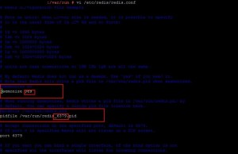
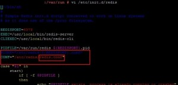

Master Configuration
Step 1 > Download the latest version of Redis from http://download.redis.io site.
wget http://download.redis.io/redis-stable.tar.gz
tar -xzvf redis-stable.tar.gz (extract the tar file.)
cd redis-stable
make ( Build)
make test ( Test Build)
Step 2 > Put the executable binaries to /usr/local/bin/
cd redis-stable/src cp redis-server /usr/local/bin/ cp redis-cli /usr/local/bin/
Step 3> Create Redis Service in /etc/init.d/
cd redis-stable mkdir /etc/redis mkdir /var/redis mkdir /var/redis/6379 cp utils/redis_init_script /etc/init.d/redis cp redis.conf /etc/redis/redis.conf
Now put the below mention changes in /etc/redis/redis.conf

And in /etc/init.d/redis file.

Installation completed
We can now start / stop the redis service.
/etc/init.d/redis start /etc/init.d/redis stop
Slave Configuration
Step 4>
Repeat all the things till steps 3 on slave server.
Only change need to made is in /etc/redis/redis.conf file.
slaveof 157.191.229.196 6379
Master Server IP = 157.191.229.196
Master Server Port = 6379
Step 5> Testing of Redis Server.
We can check whether redis is running or not through redis-cli ping command
redis-cli ping ( Redis not running )
redis-cli ping ( getting PONG means Redis running )